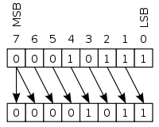

Operação de Bitwise Shift
Os operadores de Bitwise Shift são utilizados para deslocar bits de um número inteiro para direita ou para a esquerda.
Left Shift
Em um deslocamento aritmético à esquerda, os bits são deslocados para a esquerda e zeros são acrescentados à direita como demonstra a imagem:

Sua sintaxe respectivamente o valor inteiro, o operador '<<' e o numero de bits a ser deslocado
O número de bits a ser deslocado equivale a quantidade de vezes que o valor será multiplicado por 2.
Right Shift
Em um deslocamento aritmético para a direita, o bit de sinal é deslocado da esquerda, preservando, assim, o sinal do operando como demonstra a imagem:
Sua sintaxe respectivamente o valor inteiro, o operador '>>' e o numero de bits a ser deslocado
O número de bits a ser deslocado equivale a quantidade de vezes que o valor será dividido por 2, sempre resultando em um valor inteiro.
Tabela de compatibilidade de tipos da operação de Bitwise SHIFT
| Operando Esquerdo | Operando Direito | Tipo Resultado | Exemplo | Resultado |
| inteiro | inteiro | inteiro | 12 >> 2 | 3 |
| inteiro | inteiro | inteiro | 12 << 2 | 48 |
O exemplo a seguir ilustra em portugol os mesmos exemplos usados anteriormente.